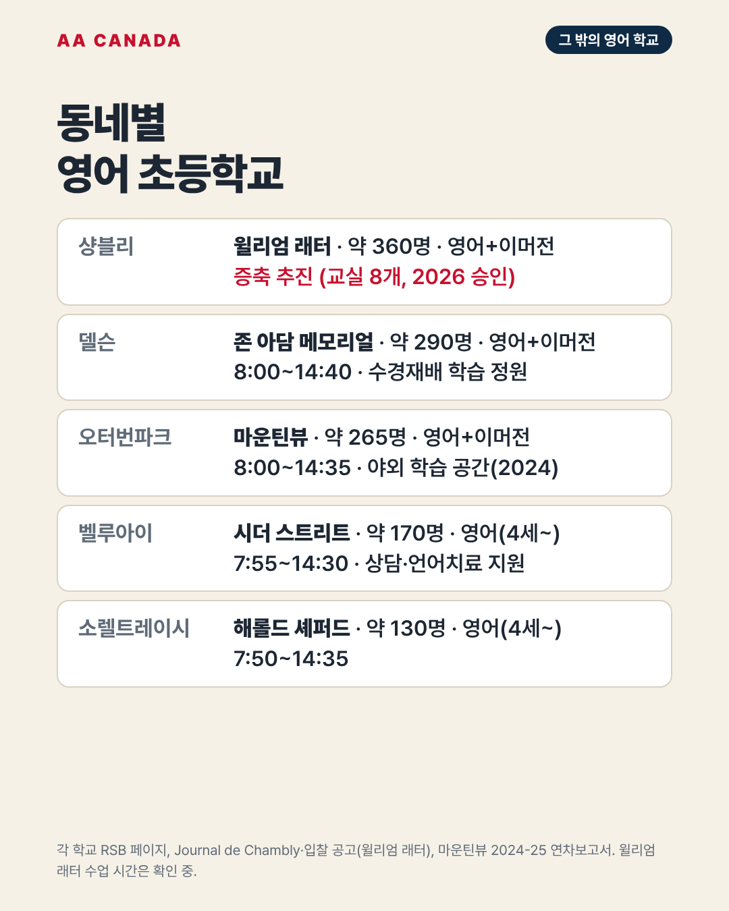

기준일 2026-10-21 · AA Canada 정리 교육청 공통 정보는 리버사이드 교육청 공통 안내를 보세요.
몬트리올에서 조금 떨어진 지역 학교, 불어 이머전 전용 학교, 특수교육 학교입니다. 조기유학생에게 먼저 권하는 학교는 아니지만, 부모 동반 가족이 이 지역에 집을 구하면 학군 학교가 됩니다.
| 학교 | 지역 | 주소·연락처 | 학생 수 | 수업 시간 | 프로그램·특징 |
|---|---|---|---|---|---|
| 윌리엄 래터 (William Latter) | 샹블리 | 1300 rue Barré, Chambly · 450-550-2527 | 약 360명 | 9:10~15:45 (확인 필요) | 영어 + 불어 이머전. 증축 추진 중: 교실 8개(약 180명)와 4세 유치원 반 추가. 2026년 3월 교육부 승인, 6월 입찰 공고 |
| 존 아담 메모리얼 (John Adam Memorial) | 델슨 | 120 Montée des Bouleaux, Delson · 450-550-2503 | 약 290명 | 8:00~14:40 | 영어 + 불어 이머전. 데이케어 6:45(또는 7:00)~18:00. 6학년 수경재배 텃밭 프로젝트, 학습 정원. 영어반 불어는 하루 한 과목(AA Canada 상담 자료, 2021) |
| 마운틴뷰 (Mountainview) | 오터번파크 (몽생틸레르 생활권) | 444 rue Mountainview, Otterburn Park · 450-550-2517 | 약 265명 | 8:00~14:35 | 영어 + 불어 이머전. 데이케어 7:00~7:50, 점심, 14:35~18:00. 2024년 가을 야외 학습 공간 개장. 4세 유치원은 시더 스트리트에서 |
| 시더 스트리트 (Cedar Street) | 벨루아이 | 250 Cedar Street, Beloeil · 450-550-2513 | 약 170명 | 7:55~14:30 | 영어(4세 유치원~6학년). 불어 심화, 숙제 도움. 사회복지사·간호사·심리사·언어치료사 지원 |
| 해롤드 셰퍼드 (Harold Sheppard) | 소렐트레이시 | 6205 boul. des Étudiants · 1-877-550-2521 | 약 130명 | 7:50~14:35 | 영어(4세 유치원~6학년). 교육청에서 가장 작은 학교 중 하나 |
영어 실력 향상이 목표인 조기유학생에게는 권하지 않습니다. 불어를 본격적으로 배우려는 부모 동반 가족이 고려할 학교입니다.
| 학교 | 지역 | 주소·연락처 | 학생 수 | 수업 시간 | 특징 |
|---|---|---|---|---|---|
| 테리 폭스 (Terry Fox) | 생위베르 | 1648 Langevin Street · 450-678-2142 | 약 225명 | 9:05~15:45 | 유치원~6학년 영어·불어 50/50 이머전. 4세 유치원. 데이케어 6:30~8:50, 15:45~18:00 |
| 로열 찰스 (Royal Charles) | 생위베르 | 5525 Maricourt Street · 450-676-2011 | 약 125명 | 7:55~14:30 | 작은 이머전 학교. 데이케어 6:45~8:00, 14:25~18:00. 일부 교사 연수일에도 데이케어 운영 |
| 마운트 브루노 (Mount Bruno) | 생브루노 | 20 rue des Peupliers · 450-550-2511 | 약 275명 | 8:10~14:50 | 이머전, 4세 유치원 |
| 학교 | 내용 |
|---|---|
| 리치 (REACH) | 신경다양성 등 특별한 지원이 필요한 학생을 위한 교육청 지역 학교. 소규모 학급, 반마다 특수교육 보조교사, 집 앞까지 통학버스. Queen 캠퍼스(유치원~6학년), Green 캠퍼스(유치원~고2), 생랑베르 인터내셔널·센테니얼 안 분교. 생랑베르 Green Street에 새 건물 공사 중(2025년 3월 착공). 입학은 교육청 배정 |